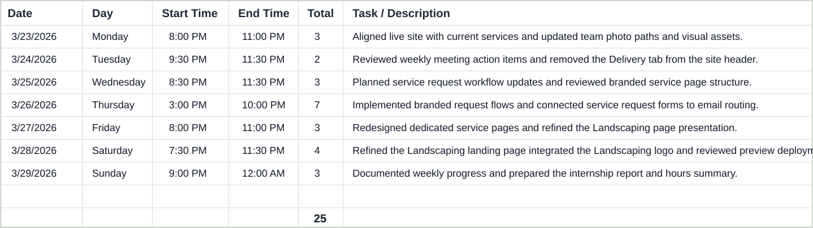

INTERNSHIP WEEKLY REPORT - WEEK 3
Overview
Week 3 focused on improving the Southern Bro Enterprises website through service alignment, interface cleanup, asset refinement, request workflow development, and branded preview updates. My work during the week covered both production-facing updates and preview-stage development intended to improve the customer request experience and the presentation of individual service lines.
Work Completed
During this week, I completed tasks related to website development, interface improvement, content refinement, deployment workflow, and service-request planning. My main responsibilities included:
- Aligning the live website with the company's current services and updating service-related presentation.
- Updating team-related assets and profile content, including portrait changes, crop adjustments, and visual cleanup.
- Adding and refining visual assets such as logos and optimized image paths.
- Removing outdated navigation elements from the site header so the live website better reflected current company offerings.
- Building branded request-form flows and improving how individual services are presented to users.
- Implementing request handling tied to email workflow so service inquiries can be routed more clearly for review.
- Designing and refining a dedicated Landscaping page in the preview environment, including multiple layout revisions and service-logo integration.
- Reviewing deployments and staging updates through the GitHub and Vercel workflow.
Computer Science Contribution
From a Computer Science perspective, my work this week involved front-end development, structured interface design, asset integration, deployment workflow management, and service-request system improvement. The request-form and email-routing work especially relates to practical software design because it connects user input, interface clarity, and communication workflow into a more organized digital process. These responsibilities contributed to usability, maintainability, and platform readiness for future growth.
Impact on the Company
My work this week helped the company improve both the live website and the preview environment used for ongoing review. By aligning active services, cleaning up navigation, refining team presentation, and building clearer service-request flows, I supported a more professional and organized digital presence. The landscaping redesign and branded request pages also helped move the site closer to a more specialized and customer-focused service experience.
Evidence of Work Completed
Evidence for this week's work includes Git commit history, preview and production deployments, live website updates, visual asset changes, service-page revisions, and request-form implementation work. Together, these materials show continued progress in web development, technical organization, UI refinement, and deployment-based review.
Work Hours
For Week 3, the timesheet covering Monday, March 23, 2026 through Sunday, March 29, 2026 totals 25 hours. The logged sessions for the week were: Monday - 3 hours, Tuesday - 2 hours, Wednesday - 3 hours, Thursday - 7 hours, Friday - 3 hours, Saturday - 4 hours, and Sunday - 3 hours. The time was spent on website service alignment, team-content updates, navigation cleanup, service-request email workflow development, branded request-page implementation, and landscaping page refinement.
Week 3 Timesheet Snapshot

Next Steps
In the next stage of the internship, I will continue refining branded service pages, improving request workflows, reviewing preview feedback, and preparing the website for additional production-ready updates. I will also continue documenting progress and organizing supporting materials for internship reporting.
William Soteria
Signature